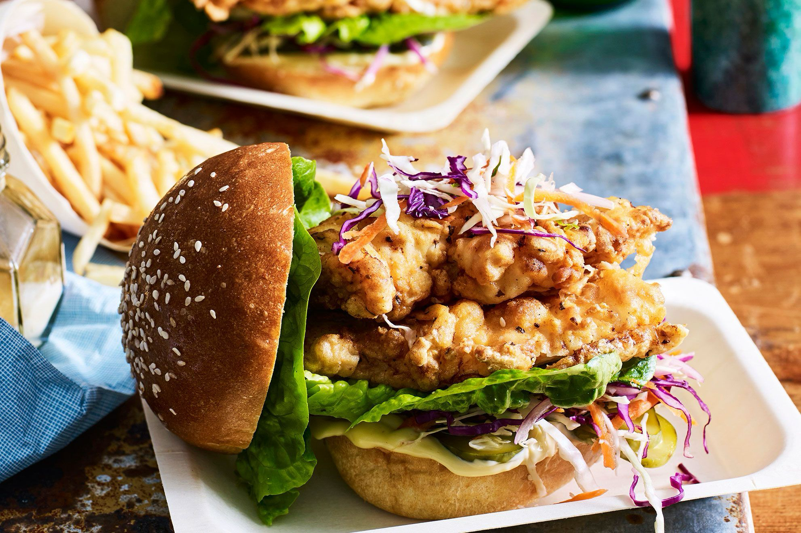

Fried Chicken Burgers
Return to Home

The Ultimate Fried Chicken Burger!
This recipe combines perfectly seasoned, crispy, golden brown chicken with a tender, juicy center. This, in turn, pairs unbelievably well with a soft sesame brioche bun topped with crisp lettuce, tangy pickles and a delicious sauce that ties it all together!
Ingredients:
- 1 1/2 cups plain flour
- 1 tsp Cajun seasoning
- 1 tbsp black pepper
- 1/2 tsp sea salt
- 250ml buttermilk
- 2 eggs
- 2 x 300g chicken breasts
- 1 crushed garlic clove
- 1/3 cup egg mayonnaise
- 1 tsp tabasco sauce
- 1/2 sliced red onion
- 1 sliced green chilli
- 1/4 red cabbage
- 1 grated carrot
- Juice of 1 lime
- Vegetable oil for deep frying
- 4 brioche rolls
- 4 lettuce leaves
- 4 sliced pickles
Steps:
- Whisk the flour, Cajun seasoning, pepper and salt in a bowl. Combine buttermilk and eggs in another bowl.
- Coat chicken in flour mixture. Dip in the buttermilk and coat again in the flour mixture. Set aside on a plate lined with baking paper.
- Combine garlic, mayonnaise and tabasco sauce in a small bowl. In a seperate bowl combine onion, chilli, cabbage, carrot and lime juice.
- Pour oil into a large frying pan. Heat over medium heat until oil is hot. Fry the chicken until golden brown and cooked through. Transfer to a wire rack and season lightly with salt.
- Spread rolls with sauce. Top with lettuce, pickles, cabbage slaw and chicken.